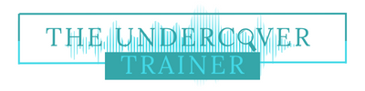

Impressum
Angaben gemäß § 5 DDG
Rascha Al-NemerThe Undercover Trainer
Rathausstraße 132
68519 Viernheim
Deutschland
Kontakt
Telefon: +49 176 36721988
E-Mail: trainer@the-undercover-trainer.com
Verantwortlich für redaktionelle Inhalte
Rascha Al-NemerRathausstraße 132
68519 Viernheim
Verantwortlich im Sinne des § 18 Abs. 2 MStV, soweit journalistisch-redaktionelle Inhalte angeboten werden.
Verbraucherstreitbeilegung
Wir sind nicht bereit und nicht verpflichtet, an Streitbeilegungsverfahren vor einer Verbraucherschlichtungsstelle teilzunehmen.
Hinweis zum Angebot
Die KI Health App und die Inhalte dieser Website dienen der persönlichen Reflexion, Prävention und Weiterbildung. Sie stellen keine medizinische oder psychotherapeutische Diagnose oder Behandlung dar und ersetzen keine individuelle Beratung durch entsprechend qualifizierte Fachpersonen.
Zurück zur Website